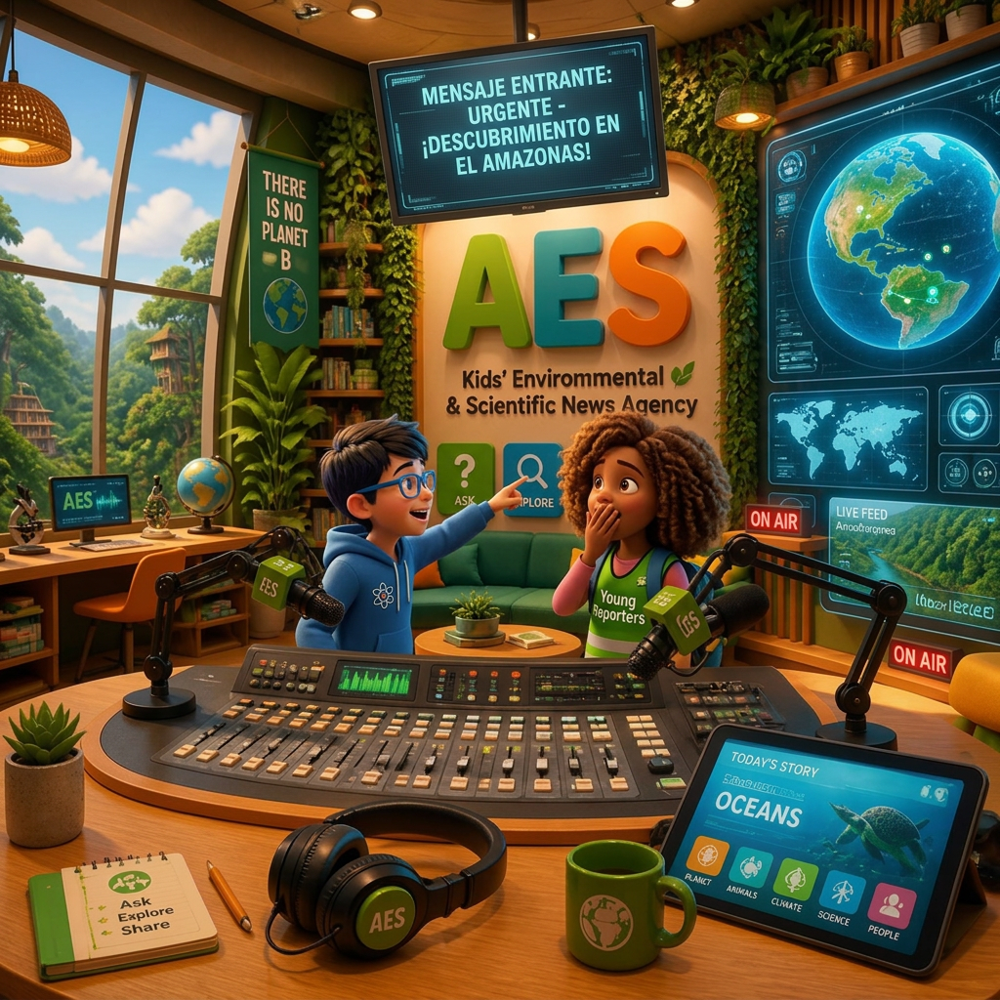

"La ciudadanía ya puede leer vuestras noticias, pero no todo el mundo tiene acceso a ellas.
Los EcoPeriodistas también utilizan la radio para informar.
Vuestra siguiente misión consiste en convertir vuestra noticia escrita en una noticia radiofónica."

Ya habéis hecho un trabajo increíble como periodistas digitales investigando, redactando y maquetando vuestra noticia sobre biodiversidad en Canva. Vuestra información ya se puede leer... ¡pero ahora queremos que se escuche!
La radio es uno de los medios de comunicación más potentes del mundo. A través de la voz, la música y los efectos de sonido, tenemos el poder de sensibilizar a toda la comunidad educativa sobre los problemas ambientales que amenazan a nuestro planeta.
En esta fase del proyecto, os convertiréis en un verdadero equipo de producción radiofónica. Trasladaremos los datos de vuestras noticias de Canva a los micrófonos para emitir un programa de radio en directo (o grabado) que terminará con un gran debate.
De la Prensa Digital a la EcoRadio: Guía Paso a Paso (Sitio web) de JAVIER MARTÍNEZ GARRIDO
Ahora descubriremos lo que es un guión técnico
Guion Técnico de EcoRadio Escolar de JAVIER MARTÍNEZ GARRIDO
De la Prensa Digital a las Ondas: Creamos nuestra EcoRadio
📝 Paso 1: Redacción del Guion y Selección de Sonidos en Equipo.
Antes de grabar, todo el grupo trabaja junto en la mesa de redacción:
Adaptad la noticia de Canva: Trasladad el titular, la entradilla, la causa del problema y la solución al formato de guion radiofónico.
Búsqueda y preparación de sonidos: Mientras redactáis el texto, el equipo debe buscar, seleccionar y probar los archivos de audio que usará en el programa (sintonías, ráfagas musicales de transición y efectos de ambiente como lluvia, pájaros o tráfico).
Ensayad y cronometrad: Leed en voz alta con los sonidos de fondo preparados, marcad las pausas para respirar y asegurad que el programa dure el tiempo fijado.
🎙️ Paso 2: ¡A grabar! Reparto de responsabilidades y rotación.
Con el guion y la carpeta de sonidos listos, pasaréis al estudio de grabación. Para que todo el mundo aprenda a manejar todas las herramientas, los puestos irán rotando en cada programa:
🎛️ Equipo Técnico (Rotatorio):
Técnico/a de Sonido: Prepara el software de grabación, comprueba los micrófonos y dispara las sintonías y efectos guardados.
Director/a: Controla el cronómetro y marca las entradas, pausas y cierres mediante señas de mano.
🗣️ Equipo de Locución (Rotatorio):
Locutores/as y Entrevistados/as: Se colocan a un palmo del micro, leen con entonación natural y siguen las indicaciones del director.
🔄 Rotación de puestos: En cada nuevo programa o toma, los miembros del grupo se intercambiarán los roles. Quien en la primera grabación fue locutor/a, en la siguiente pasará al control de sonido o a la dirección técnica. ¡Así todos experimentaréis el trabajo completo de la radio!
Lectura facilitada
📩 Mensaje de la Agencia (AES)
La gente ya puede leer nuestras noticias, pero no todas las personas leen periódicos. Por eso, vamos a usar la radio para informar.
Nuestra nueva misión es convertir la noticia que escribimos en un programa de radio.
📻 Creamos nuestra EcoRadio
Trabajaremos en equipo siguiendo 2 pasos:
📝 Paso 1: Redactar el guion y buscar sonidos
Antes de grabar, nos reunimos para preparar todo:
Adaptar la noticia: Cambiamos el texto de Canva por frases cortas y claras para hablar por el micrófono.
Elegir sonidos: Buscamos música para la entrada y efectos de sonido (como lluvia, tráfico o pájaros).
Ensayar: Leemos en voz alta y controlamos el tiempo que dura la noticia.
🎙️ Paso 2: ¡A grabar en el estudio!
Nos repartimos las tareas. Todos los miembros del equipo cambiarán de rol en cada grabación para aprenderlo todo.
🎛️ Equipo Técnico:
Técnico o técnica de sonido: Prepara los micrófonos, pone la música y los efectos de sonido.
Director o directora: Controla el tiempo y avisa con señas cuándo hay que hablar o parar.
🗣️ Equipo de Locución:
Locutores, locutoras y entrevistados: Hablan cerca del micrófono con voz clara y siguen las indicaciones de la dirección.
Audio
Orientaciones metodológicas
Objetivo de la actividad: Transformar el producto periodístico escrito en una pieza radiofónica mediante la elaboración de un guion técnico, la selección de efectos de sonido y la locución/grabación colaborativa, promoviendo el trabajo en equipo con roles rotativos.
Agrupamiento: Equipos cooperativos (equipos de producción radiofónica de 3 a 4 alumnos).
Pautas de Ejecución en el Aula
Gestión del encargo: El alumnado asume el rol de productores radiofónicos para adaptar la noticia maquetada en Canva al formato sonoro. Su meta es emitir o grabar un programa de radio escolar con locución en directo y efectos.
Mecánica de resolución:
- Redacción del guion y búsqueda sonora (Paso 1): Adaptar el titular, entradilla, desarrollo y soluciones a lenguaje oral (frases cortas y directas). Buscar y seleccionar efectos de ambiente (fauna, naturaleza) y sintonías musicales.
- Cronometrar la lectura en voz alta.
- Organización del estudio y rotación (Paso 2): Repartir los roles dentro del grupo (Técnico/a de sonido, Director/a, Locutores/as). Realizar ensayos con señas de mano antes de la grabación final.
- Intercambio de roles: Asegurar que en tomas o programas posteriores los alumnos roten en sus funciones (quien locuta pasa al control técnico y viceversa).
- Estructura de la Actividad (Esquema del Guion Técnico / Plantilla)
- Estructura del Programa de EcoRadio
Fase 1: Mesa de Redacción (Preproducción)
Adaptación del texto: Transposición del contenido de Canva a frases locutables con marcas de respiración.
Carpeta de audio: Selección de sintonía de entrada, ráfagas de transición y efectos de fondo.
Control de tiempo: Ajuste del texto al tiempo asignado de emisión.
Fase 2: Estudio de Grabación (Producción)
Control Técnico: Técnico/a de Sonido (software, micros, disparar efectos) y Director/a (tiempos, señas visuales).
Locución: Locutores/as (entonación, distancia al micro, lectura fluida).
Plan de Rotación: Cambio obligatorio de roles entre integrantes del equipo para la siguiente emisión.
Evaluación y Feedback
Técnica: Rúbrica de producción radiofónica y lista de control del trabajo cooperativo rotativo.
Criterios clave:
Adaptación adecuada del registro escrito al formato y guion radiofónico.
Integración coherente de los recursos sonoros (sintonías, efectos) con el texto hablado.
Desempeño equitativo de los distintos roles (técnicos y de locución) a través de la rotación.